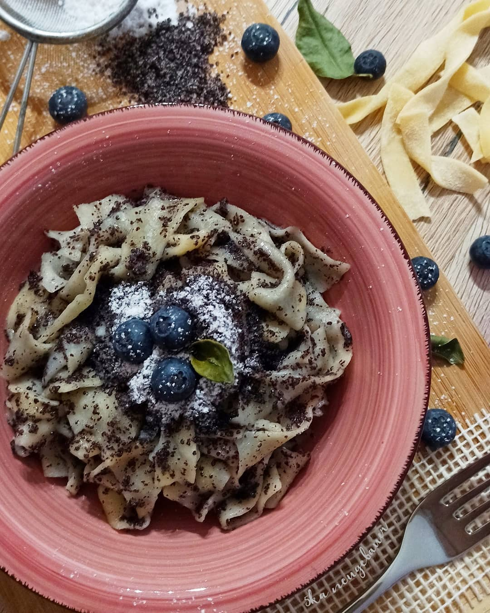

Domáce rezance podľa @5ka_neugebauer — Normy Jedál
#rezancesmakom #domacerezance #mak #smakom #sladkyobed #mominthekitchen #poppyseed #lunchideas #lunch #yummy
...na žiadosť syna 🙋♂️... rezance s makom ☺️
Rezance: 300g poloh.muká, 1 vajce, 100ml voda
Uvarené rezance zmiešame s rozpusteným maslom, mletým makom a práškom cukrom